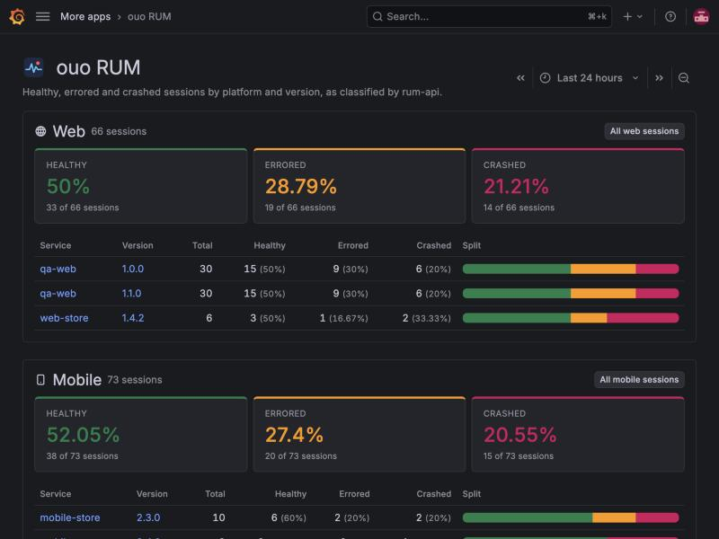
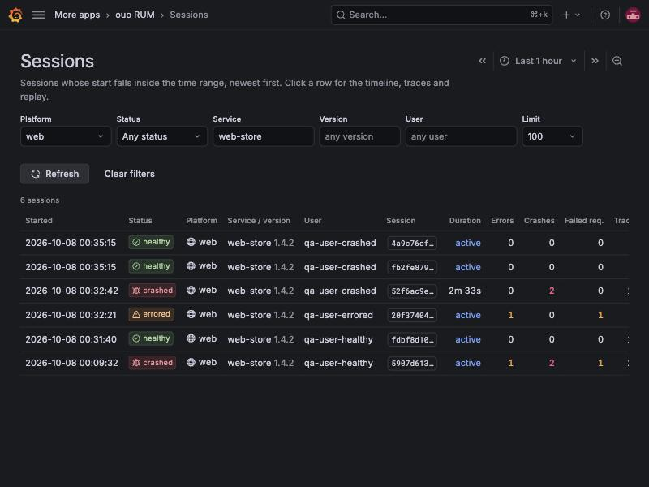
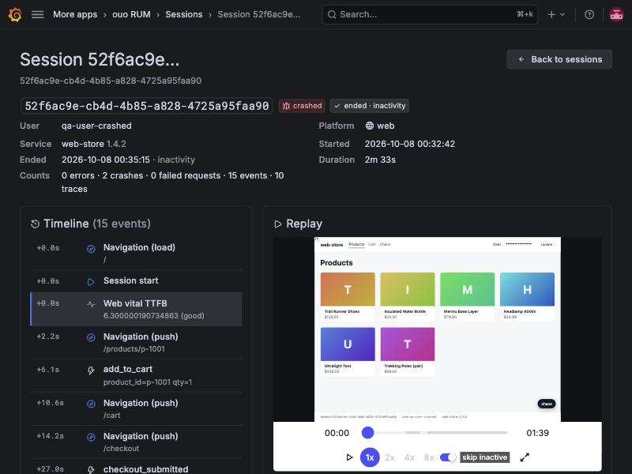
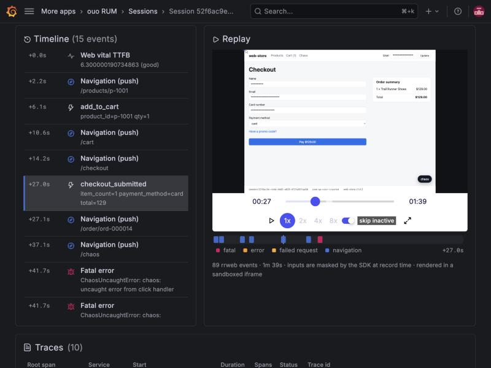
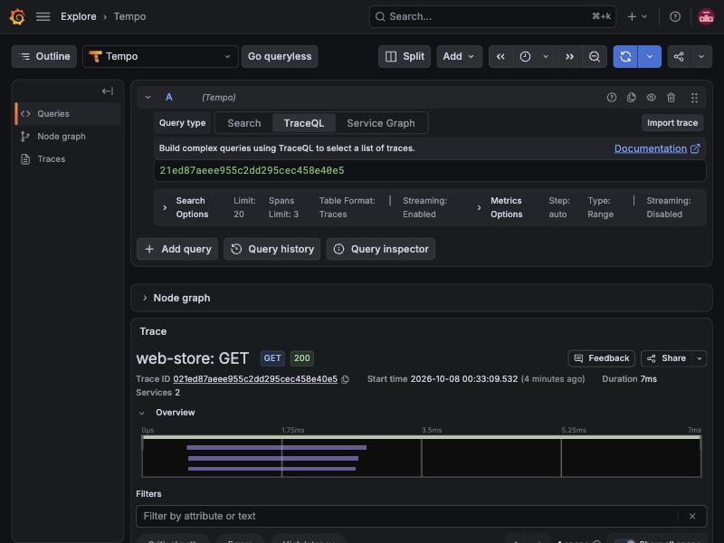
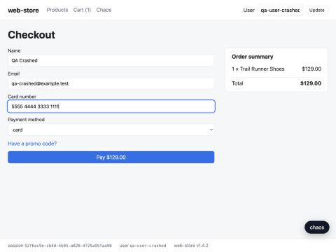
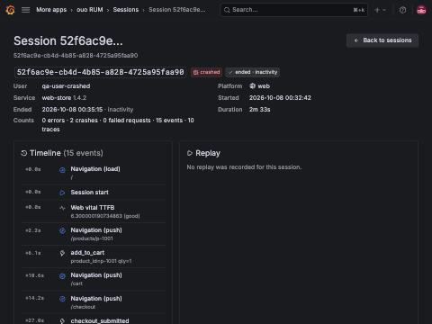
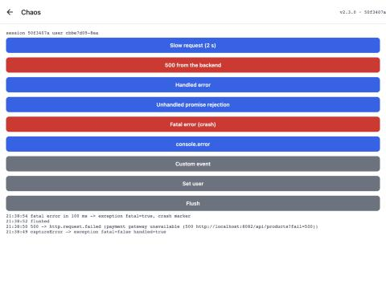

ouo MVP verification
Phase 6 QA, 2026-10-08. Every check below was run against the local Compose stack
(Grafana 13.2.1, Loki 3.7.7, Tempo 3.0.3, Mimir 3.2.1, otel-collector-contrib 0.160.0, rum-api and
demo backend built from this tree) with the host ports from deploy/compose/.env
(Grafana 3001, OTLP/HTTP 4328, rum-api 8080, backend 8082). Self-contained page: no external resources.
Scripted scenario
deploy/scripts/e2e.shAcceptance checks
Unit tests
Bugs found
1. Architecture and data flow
Both SDKs speak OTLP/HTTP to the collector; the only thing that bypasses the collector is replay,
which the browser SDK posts as gzip chunks straight to rum-api (ADR-0003). The Grafana app plugin
talks to rum-api through Grafana's plugin route proxy, and rum-api answers from Loki (session events),
Tempo (traces per session.id) and its replay store.
2. Acceptance checklist (docs/MVP.md)
Method and the key evidence for each check. "Verified live" means a real app driven in a browser;
"scripted" means tests/e2e/scenario.mjs; "unit" means the test suites.
| Check | Result | Method and evidence |
|---|---|---|
docker compose up brings up Grafana, Loki, Tempo, Mimir, Collector, rum-api, demo backend | pass | docker compose -f deploy/compose/compose.yaml ps: 7 services Up (grafana, backend, rum-api healthy); deploy/scripts/wait-ready.sh ready: loki, tempo, mimir, otel-collector, grafana; GET rum-api /readyz -> {"checks":{"loki":"ok","tempo":"ok"},"ready":true}. |
Web demo produces sessions, errors, traces that reach Tempo and Loki with session.id attached | pass | Verified live, session fdbf8d10 (healthy flow): Loki {service_name="web-store"} | session_id="fdbf8d10-..." -> 11 records, 0 without session_id (session.start, navigation, add_to_cart, checkout_submitted, web_vital). Tempo { span.session.id = "fdbf8d10-..." } -> 13 traces. Errored session 20f37404: exception (fatal=false) + http.request.failed 500; crashed session 52f6ac9e: exception fatal=true. All three classified as expected by rum-api (section 4). |
Mobile demo produces sessions with service.version, errors, and a crash that is classified as crashed | pass simulator not run | Verified live on the Expo web build of examples/mobile (http://localhost:8083, same JS bundle and SDK; no Xcode on this machine, so no iOS Simulator): session 50f3407a on mobile-store 2.3.0: products -> add to cart -> checkout (card) -> chaos handled error + 500 + fatal error; reload = relaunch -> rum-api: status=crashed, end_reason=crash, service_version=2.3.0, timeline ends with exception(fatal) then session.end[crash]; the next session carries session.previous_id=50f3407a. Scripted: 20 qa-mobile sessions on 1.0.0 / 1.1.0 incl. a crash-marker-only session (session.end crash without a fatal exception) classified crashed. |
| Backend spans join the browser and mobile spans in one trace via W3C Trace Context | pass | Tempo search { span.session.id = "fdbf8d10-..." && span.http.request.method = "POST" }: trace 724961e9... serviceStats web-store 1 span + demo-backend 5 spans; mobile session 50f3407a: trace dba1c415... mobile-store 1 + demo-backend 5. Grafana Explore (figure 6) renders web-store GET -> demo-backend GET /api/cart -> cart.load -> db.query, 2 services. Scripted: every synthetic trace (client span + qa-backend server span with parentSpanId) resolves through Grafana's Tempo datasource with 2 spans. |
| Overview page shows healthy / errored / crashed percentages for web and for mobile split by version | pass | Scripted: GET /v1/stats/health?service=qa-web|qa-mobile buckets equal the sent matrix exactly (section 3). Live (figure 2): Overview last 24 h shows qa-web 1.0.0 and 1.1.0 rows 30 sessions 15/9/6 = 50% / 30% / 20% (three e2e runs), web-store 1.4.2 6 sessions 3/1/2, mobile tiles and mobile-store 2.3.0 / 2.4.0 rows; numbers identical to GET /v1/stats/health?from=now-24h. |
| Sessions page lists sessions with status, user, platform, version, trace count | pass | Live (figure 3): /a/ouo-rum-app/sessions?platform=web&service=web-store lists the three QA sessions with status badges healthy / errored / crashed, users qa-user-healthy|errored|crashed, platform web, web-store 1.4.2, traces 13 / 4 / 10, replay icon. Scripted: GET /v1/sessions?service=qa-mobile&status=crashed returns exactly the 4 crashed ids with service_version, platform and user. |
| Session detail shows a timeline (session start, errors, requests, session end), lists traces with Tempo links, and plays the replay for web sessions | pass | Live (figures 4 to 6), session 52f6ac9e: 15 timeline events in order (Navigation load, Session start, Web vital, navigations, add_to_cart, checkout_submitted, 2x Fatal error, Session end (inactivity)); Traces panel lists 10 traces; "Open in Explore" opens Grafana Explore on Tempo with the trace view; replay panel plays 89 rrweb events (1m 39s), timeline click seeks the player. Scripted: timelines ordered and equal to the sent event sequence; every grafana_url returns HTTP 200 with admin:admin. |
| Replay masks inputs by default and can be disabled independently of telemetry | pass | Masking (figure 5): at checkout_submitted the replay iframe DOM has the card input (.ouo-mask) value *******************, name **********, email ***********************, user box masked; the typed digits, name and email are absent from the replay HTML (figure 7 shows them in the live page). Independence: there is no runtime env toggle in examples/web (replay.enabled is an init option, unit-tested: a disabled page never loads the rrweb chunk), so rum.replay.pause() was used: chunks 8 -> 9 (pause flushes the buffer) -> 9 after 13 s of scrolling and clicking while paused, telemetry still flowing (custom event + spans arrived) -> 10 after resume. DELETE /v1/sessions/52f6ac9e/replay -> 204, directory removed, GET .../replay 404, session has_replay=false, plugin shows "No replay was recorded for this session." (figure 8). |
| Session ends are inferred correctly for the four end reasons in the spec and covered by tests | pass | Unit: sdk/browser 45 tests (spec cases 1, 2, 3, 4, 7, inactivity timer, max_duration), sdk/react-native 36 tests (cases 1, 2, 3, 5 background, 6 crash marker, 7), rum-api internal/session fixtures (session.end wins, inactivity and max_duration inference). Live: ouo.session.lastActivity set to 31 min ago and reload -> new id 4a9c76df, old session 52f6ac9e in rum-api: state=ended, end_reason=inactivity, timeline ends with session.end {end_reason: inactivity, duration_ms: 93252}, new session's records carry session.previous_id. Live mobile: crash on relaunch (above); background verified only by unit test and the Phase 5 Node playground. Side effect found: the inactivity path emits a second, phantom session.start (bug 1, section 5). |
3. Synthetic matrix vs rum-api
The scenario posts OTLP/JSON straight to the collector: per service (qa-web platform web,
qa-mobile platform mobile) and version (1.0.0, 1.1.0) 5 healthy, 3 errored, 2 crashed sessions
with session.start, the ADR-0004 classifying events, 1 to 3 traces each (client span + qa-backend
server span, all carrying session.id), and for crashed mobile sessions a session.end with
end_reason=crash. It then polls rum-api until the totals appear and asserts counts, percentages, the crashed id lists,
one detail per service per status, timeline order and every Grafana trace link.
| Platform | Service | Version | Sent h/e/c | rum-api h/e/c | rum-api % | Total | Match |
|---|
Session detail checks
| Session | Status | End reason | Events | Traces | Grafana Explore link | Grafana Tempo datasource spans |
|---|
The scripted negative path was exercised too: before the trace-id normalisation (Tempo strips leading zeros, see section 5) the script exited 1 and printed the expected / actual diff with - 0a0928... / + a0928... lines.
4. Real sessions from the walk-through
Produced in the web demo (http://localhost:5173, real @ouo/browser, Chromium browser pane) and the
Expo web build of the mobile demo, read back from GET /v1/sessions/{id}.
| Session | App / version | What was done | rum-api status | User | Errors / crashes / failed | Traces | Replay |
|---|---|---|---|---|---|---|---|
fdbf8d10-1ca8-4a8f-a994-1f093fb6aad0 | web-store 1.4.2 | product, add to cart, cart, checkout (card), order ord-000013 | healthy | qa-user-healthy | 0 / 0 / 0 | 13 | yes |
20f37404-b67f-426a-9ccd-421357c9d9d0 | web-store 1.4.2 | chaos: handled error, POST /api/checkout?fail=500, flush | errored | qa-user-errored | 1 / 0 / 1 | 4 (one has_error) | yes |
52f6ac9e-cb4d-4b85-a828-4725a95faa90 | web-store 1.4.2 | product, cart, checkout (card 5555 ...), order ord-000014, chaos: uncaught error, flush, replay pause / resume, then inactivity expiry | crashed, ended inactivity | qa-user-crashed | 0 / 2 (React dev double report) / 0 | 10 | 10 chunks, 89 events; deleted at the end of the run |
4a9c76df-b5a4-41ed-8b34-c461576992df | web-store 1.4.2 | session started by the inactivity rotation, previous_id=52f6ac9e | healthy | qa-user-crashed | 0 / 0 / 0 | 0 to 2 | yes |
fb2fe879-3c1f-4831-a7dd-63d7540446fd | web-store 1.4.2 | phantom: second session.start emitted during the same rotation (bug 1) | healthy | qa-user-crashed | 0 / 0 / 0 | 0 | no |
50f3407a-1591-43ec-a3f9-c287c434ab42 | mobile-store 2.3.0 (Expo web) | product, add to cart, checkout (card), order ord-000015, chaos: handled error, 500, flush, fatal error; reload | crashed, ended crash | cbbe7d09-8ea... (anonymous) | 1 / 1 / 1 | 6 (one has_error) | n/a (mobile) |
c4d97785-... | mobile-store 2.3.0 | session after the relaunch, previous_id=50f3407a | healthy | same anonymous id | 0 / 0 / 0 | 0 | n/a |
Screenshots








5. Known gaps and bugs
Nothing was fixed by QA (outside the allowed paths); reproduction steps are in
project/agents/qa/reports/phase-6-bugs.html.
| # | Severity | Where | What |
|---|---|---|---|
| 1 | bug | sdk/browser/src/session/manager.ts + telemetry/correlation.ts |
When an expired session is found (init after the inactivity window, or the same-tab timer / lazy restart in ensure()), the SDK emits two session.start events with different ids at the same millisecond; one id is persisted and used, the other is a phantom session with a single event that inflates session totals (always healthy). Cause: end() sets current = null then emits session.end; the log processor calls session.id() for that record, which runs ensure() -> create() (first start), then the caller runs create() again. Reproduced 2/2 times (fb2fe879, add731c5). The React Native manager should be checked for the same re-entrancy. |
| 2 | minor | rum-api timeline / Tempo | Tempo's search API returns trace ids without leading zeros (31 hex chars for ids starting with 0); rum-api and the plugin pass them through. Tempo, Grafana Explore and the Tempo datasource accept both forms, so links work; only the displayed id differs from the W3C 32-char form. The e2e script compares ids with leading zeros stripped. |
| 3 | minor | rum-api timeline order | The initial navigation (load) event and session.start share the same millisecond and the timeline shows navigation first; a tie-break that puts session.start first would read better. |
| 4 | minor | rum-api ended_at |
For a client-detected inactivity end the record's ended_at is the timestamp of the session.end record (when the next page load detected it, 21:35:15) rather than the SDK's ouo.session.ended_at (lastActivity + 30 min, 21:34:15); duration is computed from the attribute, so the two disagree by the gap between expiry and detection. |
| 5 | gap | Phase 5 | iOS Simulator run still owed (no Xcode on this machine); mobile verified on the Expo web build and the Node playground. background end reason verified by unit test only. Web vitals other than TTFB / INP not observed (automation tabs load hidden). Cross-tab session sharing only unit-tested. |
| 6 | note | trace counts | Tempo indexing lag plus rum-api's 60 s cache: a session opened within about a minute of its traces shows fewer traces (the walk-through saw 0 for a fresh session, 13 a minute later). The e2e script polls up to 90 s. |
6. How to reproduce
# stack (ports from deploy/compose/.env; defaults 3000 / 4318 / 8080 / 8081) docker compose -f deploy/compose/compose.yaml up -d --build deploy/scripts/wait-ready.sh && deploy/scripts/smoke.sh # unit tests npm run -w sdk/browser test # 6 files, 45 tests npm run -w sdk/react-native build && npm run -w sdk/react-native test # 5 files, 36 tests npm run -w plugins/ouo-rum-app test # 2 suites, 14 tests (cd services/rum-api && go vet ./... && go test ./...) (cd examples/backend && go vet ./... && go test ./...) # scripted scenario (exit 0 on success, 1 with a diff on a mismatch, 2 on an error) deploy/scripts/e2e.sh --out project/agents/qa/reports/e2e-last-run.json # real sessions: web demo npm run -w sdk/browser build && npm run -w examples/web dev # http://localhost:5173 # healthy: set user, product -> add to cart -> cart -> checkout (card) -> pay # errored: /chaos -> "Handled error", "500 response", "Flush" # crashed: /chaos -> "Uncaught error", "Flush" # fresh session between runs: in devtools, block writes to localStorage["ouo.session"] # (Storage.prototype.setItem override) then remove the key and reload; the SDK # re-persists the live session on pagehide otherwise. # inactivity: set ouo.session.lastActivity to Date.now() - 31*60*1000 the same way, reload. # mobile demo on Expo web (cd examples/mobile && npx expo start --web --port 8083) # products -> product -> add to cart -> checkout -> pay; Chaos: handled, 500, flush, fatal; reload # read back curl 'localhost:8080/v1/sessions?from=now-1h&service=web-store' curl 'localhost:8080/v1/sessions/<id>' # record + timeline + traces (grafana_url) curl 'localhost:8080/v1/sessions/<id>/replay' # chunk meta; -X DELETE removes it # Grafana: http://localhost:3001/a/ouo-rum-app (admin / admin)